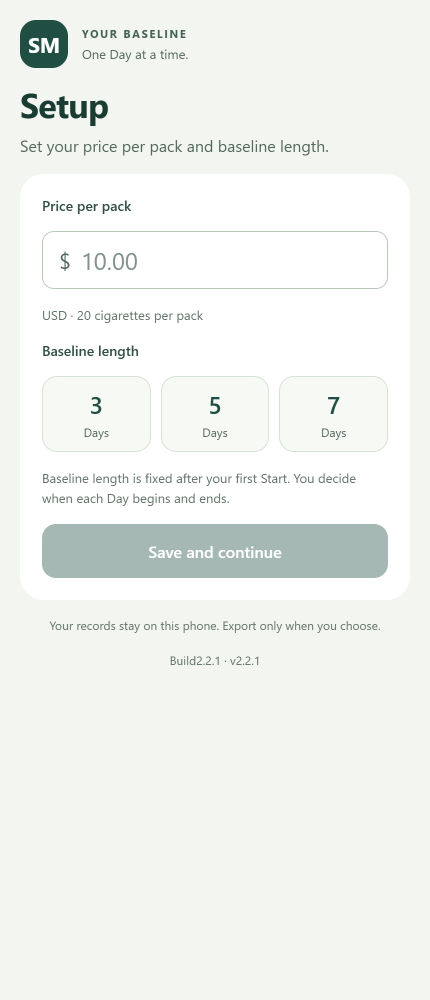
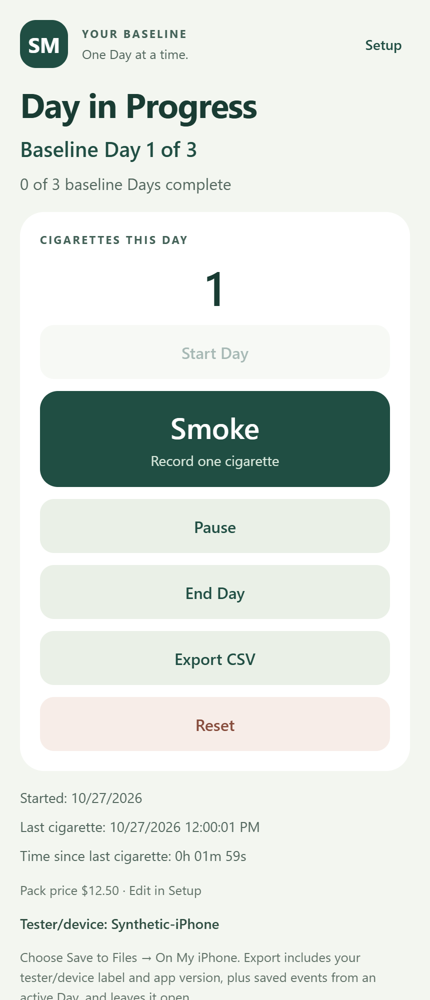

Build 2.9 · Development on hold
Smoking
Cessation
An iPhone prototype that measures smoking in cigarettes per hour. It uses that baseline rate to estimate what a later day would cost and compares the estimate with actual spending.
View the validation overview (PDF)Demo screens


Demo screenshots use invented data. The validation reports use recorded test events.
Build 2.9 testing
The published reports review 28 recorded test events with the tester label and record IDs replaced. Final testing of the installed app and Build 2 sign-off remain open.